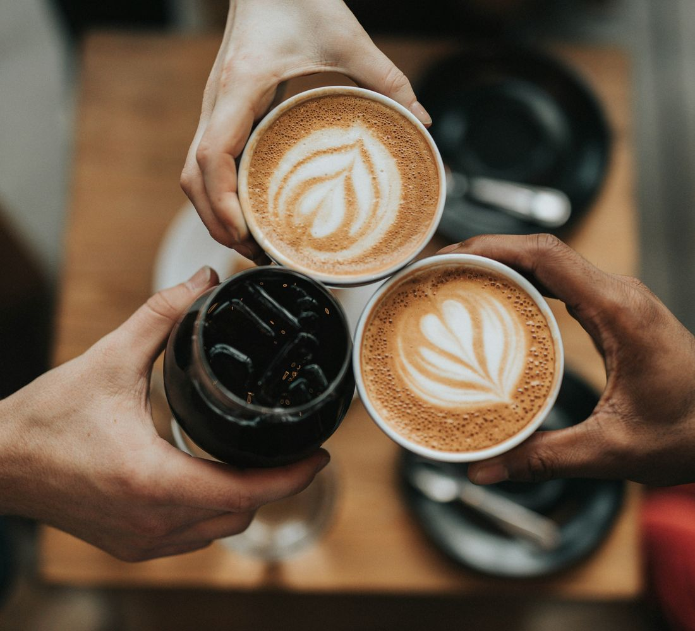
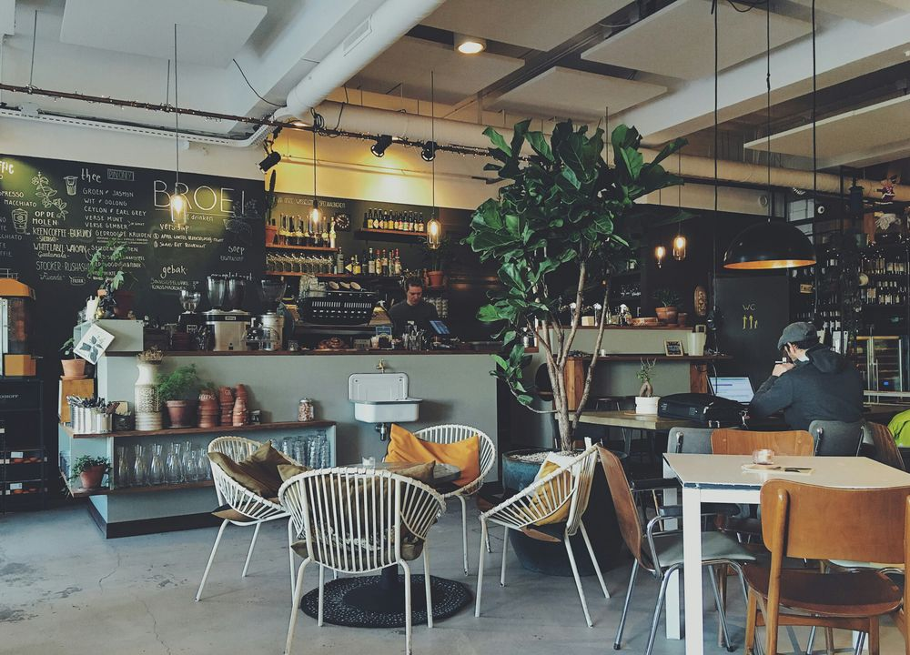
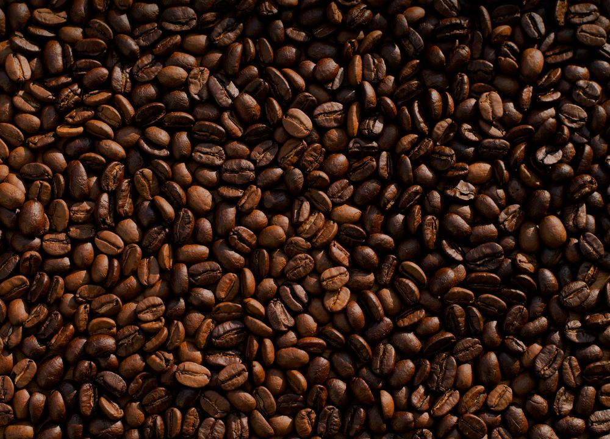
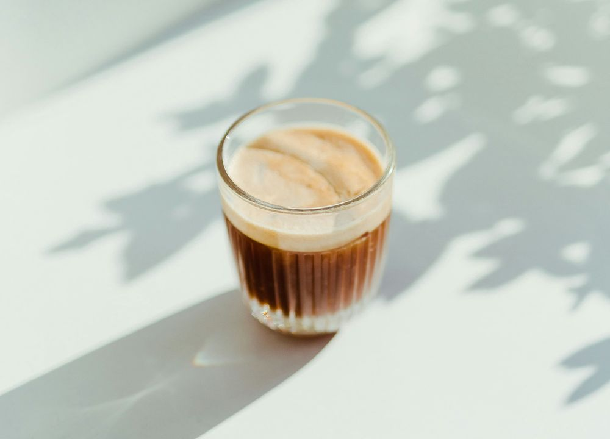
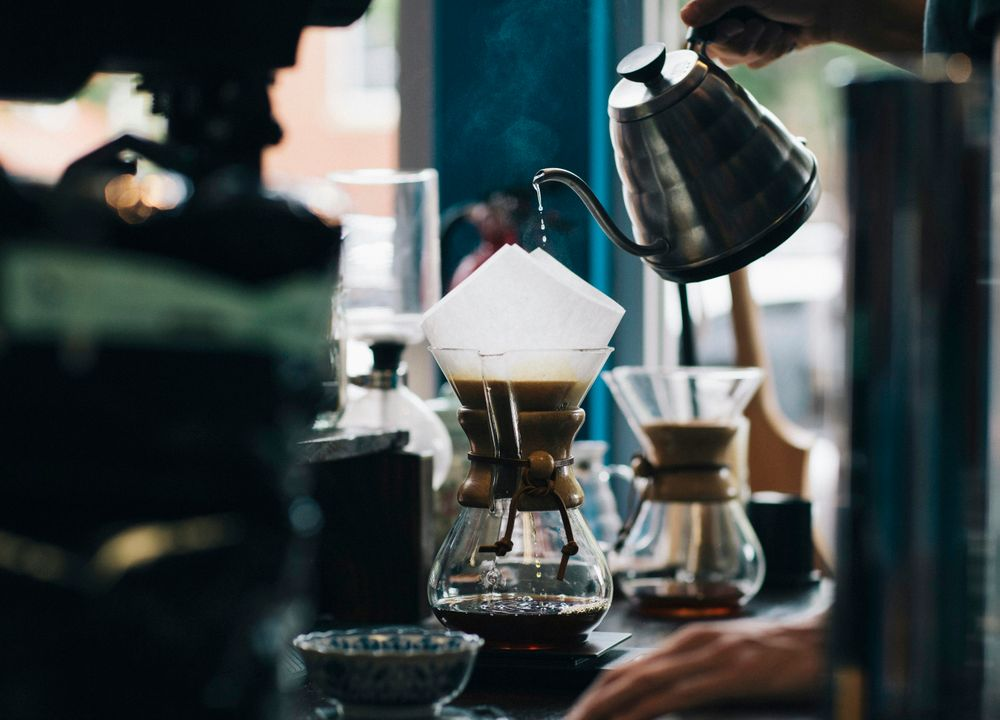

Color / roles
Un color no es un hex: es un rol.
Ocho roles y sus parejas on-* en tokens.css. El tema oscuro solo reescribe esos valores.
UTP · Sesión 16 · Material Design
La carta de un tostador imaginario, armada con los principios de Material Design: color con roles, elevación que se siente, tipografía con jerarquía y componentes que responden. Cuatro páginas, ninguna plantilla.


Índice del proyecto
Los ejercicios propuestos de la guía, con una misma marca para que se lea como un sitio real. Cada página demuestra una parte distinta de Material: énfasis, navegación, color adaptativo y componentes oficiales.

Propuesto 1 · Contacto
Campos con etiqueta flotante, validación sin librerías y una confirmación que no te deja en duda.

Propuesto 2 · Carta
Tarjetas con filtros por proceso, un pedido que se guarda y un FAB que abre el resumen.

Propuesto 3 · Temas
Claro y oscuro lado a lado, con los roles de color y el contraste WCAG calculado en vivo.

Propuesto 4 · Material Web
Registro con los componentes oficiales md-* y un tema propio hecho con variables.
De la guía
Versiones cortas de los ejercicios resueltos, con la misma paleta para poder comparar cómo un sistema sostiene páginas distintas.
Ábrelos en orden: tarjeta, formulario y componentes web.
Detrás del diseño
Color / roles
Ocho roles y sus parejas on-* en tokens.css. El tema oscuro solo reescribe esos valores.
Elevación / niveles
Cinco niveles con dos capas de sombra cada uno. Al pasar el mouse, las tarjetas suben de nivel 1 a 3.
Tema / preferencia
El tema se guarda en localStorage y se comparte entre las siete páginas.